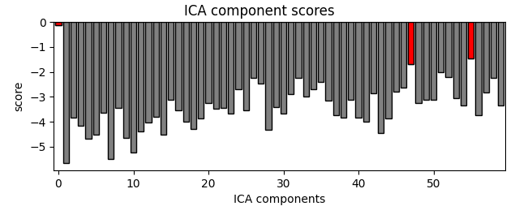
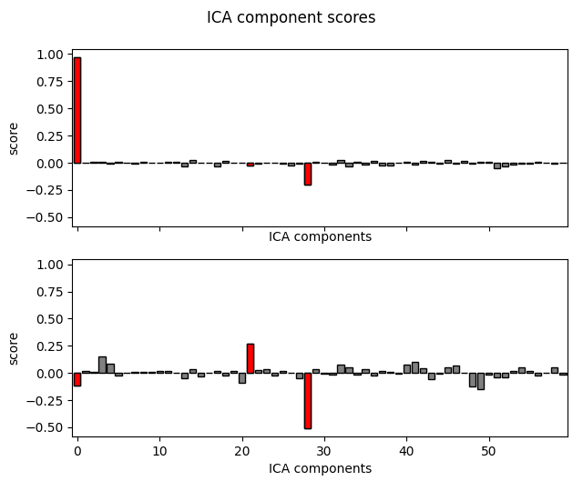
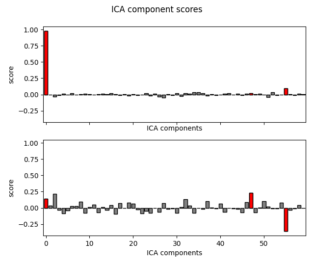
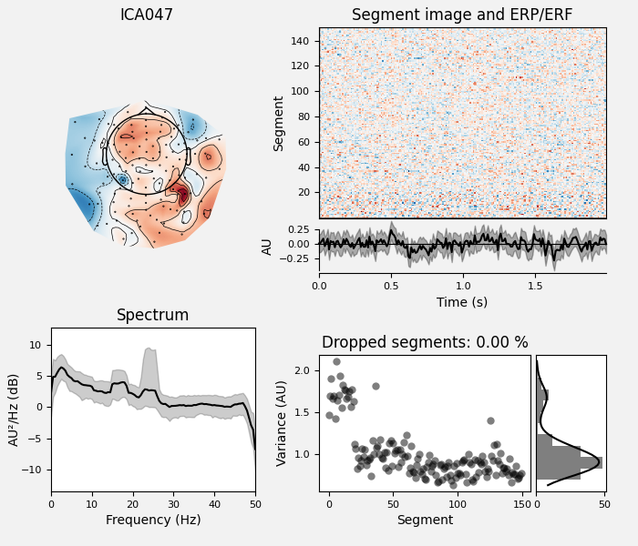
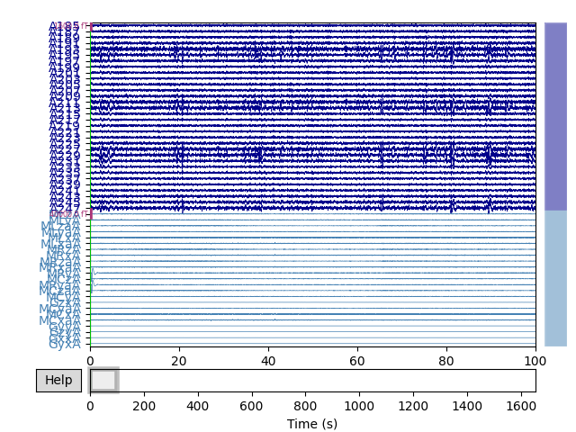

Note
Click here to download the full example code
Find MEG reference channel artifacts¶
Use ICA decompositions of MEG reference channels to remove intermittent noise.
Many MEG systems have an array of reference channels which are used to detect external magnetic noise. However, standard techniques that use reference channels to remove noise from standard channels often fail when noise is intermittent. The technique described here (using ICA on the reference channels) often succeeds where the standard techniques do not.
There are two algorithms to choose from: separate and together (default). In the “separate” algorithm, two ICA decompositions are made: one on the reference channels, and one on reference + standard channels. The reference + standard channel components which correlate with the reference channel components are removed.
In the “together” algorithm, a single ICA decomposition is made on reference + standard channels, and those components whose weights are particularly heavy on the reference channels are removed.
This technique is fully described and validated in 1
# Authors: Jeff Hanna <jeff.hanna@gmail.com>
#
# License: BSD (3-clause)
import mne
from mne import io
from mne.datasets import refmeg_noise
from mne.preprocessing import ICA
import numpy as np
print(__doc__)
data_path = refmeg_noise.data_path()
Read raw data, cropping to 5 minutes to save memory
raw_fname = data_path + '/sample_reference_MEG_noise-raw.fif'
raw = io.read_raw_fif(raw_fname).crop(300, 600).load_data()
Out:
Opening raw data file /home/circleci/mne_data/MNE-refmeg-noise-data/sample_reference_MEG_noise-raw.fif...
Range : 0 ... 165353 = 0.000 ... 1653.530 secs
Ready.
Reading 0 ... 30000 = 0.000 ... 300.000 secs...
Note that even though standard noise removal has already been applied to these data, much of the noise in the reference channels (bottom of the plot) can still be seen in the standard channels.
select_picks = np.concatenate(
(mne.pick_types(raw.info, meg=True)[-32:],
mne.pick_types(raw.info, meg=False, ref_meg=True)))
plot_kwargs = dict(
duration=100, order=select_picks, n_channels=len(select_picks),
scalings={"mag": 8e-13, "ref_meg": 2e-11})
raw.plot(**plot_kwargs)

The PSD of these data show the noise as clear peaks.
raw.plot_psd(fmax=30)
Out:
Effective window size : 20.480 (s)
Run the “together” algorithm.
raw_tog = raw.copy()
ica_kwargs = dict(
method='picard',
fit_params=dict(tol=1e-4), # use a high tol here for speed
)
all_picks = mne.pick_types(raw_tog.info, meg=True, ref_meg=True)
ica_tog = ICA(n_components=60, allow_ref_meg=True, **ica_kwargs)
ica_tog.fit(raw_tog, picks=all_picks)
# low threshold (2.0) here because of cropped data, entire recording can use
# a higher threshold (2.5)
bad_comps, scores = ica_tog.find_bads_ref(raw_tog, threshold=2.0)
# Plot scores with bad components marked.
ica_tog.plot_scores(scores, bad_comps)
# Examine the properties of removed components. It's clear from the time
# courses and topographies that these components represent external,
# intermittent noise.
ica_tog.plot_properties(raw_tog, picks=bad_comps)
# Remove the components.
raw_tog = ica_tog.apply(raw_tog, exclude=bad_comps)
- 


Out:
Fitting ICA to data using 147 channels (please be patient, this may take a while)
Selecting by number: 60 components
Fitting ICA took 7.5s.
Using multitaper spectrum estimation with 7 DPSS windows
Not setting metadata
Not setting metadata
150 matching events found
No baseline correction applied
0 projection items activated
0 bad epochs dropped
Not setting metadata
Not setting metadata
150 matching events found
No baseline correction applied
0 projection items activated
0 bad epochs dropped
Applying ICA to Raw instance
Transforming to ICA space (60 components)
Zeroing out 2 ICA components
Projecting back using 147 PCA components
Cleaned data:
raw_tog.plot_psd(fmax=30)
Out:
Effective window size : 20.480 (s)
Now try the “separate” algorithm.
raw_sep = raw.copy()
# Do ICA only on the reference channels.
ref_picks = mne.pick_types(raw_sep.info, meg=False, ref_meg=True)
ica_ref = ICA(n_components=2, allow_ref_meg=True, **ica_kwargs)
ica_ref.fit(raw_sep, picks=ref_picks)
# Do ICA on both reference and standard channels. Here, we can just reuse
# ica_tog from the section above.
ica_sep = ica_tog.copy()
# Extract the time courses of these components and add them as channels
# to the raw data. Think of them the same way as EOG/EKG channels, but instead
# of giving info about eye movements/cardiac activity, they give info about
# external magnetic noise.
ref_comps = ica_ref.get_sources(raw_sep)
for c in ref_comps.ch_names: # they need to have REF_ prefix to be recognised
ref_comps.rename_channels({c: "REF_" + c})
raw_sep.add_channels([ref_comps])
# Now that we have our noise channels, we run the separate algorithm.
bad_comps, scores = ica_sep.find_bads_ref(raw_sep, method="separate")
# Plot scores with bad components marked.
ica_sep.plot_scores(scores, bad_comps)
# Examine the properties of removed components.
ica_sep.plot_properties(raw_sep, picks=bad_comps)
# Remove the components.
raw_sep = ica_sep.apply(raw_sep, exclude=bad_comps)
- 
- 
- 
Out:
Fitting ICA to data using 23 channels (please be patient, this may take a while)
Selecting by number: 2 components
Fitting ICA took 0.8s.
Using multitaper spectrum estimation with 7 DPSS windows
Not setting metadata
Not setting metadata
150 matching events found
No baseline correction applied
0 projection items activated
0 bad epochs dropped
Not setting metadata
Not setting metadata
150 matching events found
No baseline correction applied
0 projection items activated
0 bad epochs dropped
Not setting metadata
Not setting metadata
150 matching events found
No baseline correction applied
0 projection items activated
0 bad epochs dropped
Applying ICA to Raw instance
Transforming to ICA space (60 components)
Zeroing out 3 ICA components
Projecting back using 147 PCA components
Cleaned raw data traces:
Cleaned raw data PSD:
raw_sep.plot_psd(fmax=30)
Out:
Effective window size : 20.480 (s)
References¶
- 1
Jeff Hanna, Cora Kim, and Nadia Müller-Voggel. External noise removed from magnetoencephalographic signal using independent component analysis of reference channels. Journal of Neuroscience Methods, 2020. doi:10.1016/j.jneumeth.2020.108592.
Total running time of the script: ( 0 minutes 38.727 seconds)
Estimated memory usage: 145 MB